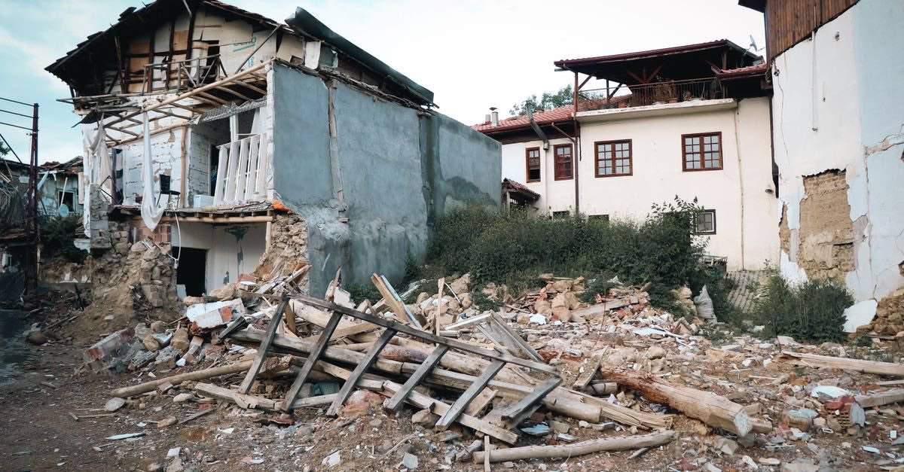

Deprem sonrası ilk günler
Depremden sonra ilk 30 gün: hangi hakkın süresi ne zaman doluyor?
Deprem sonrasında kaybedilen hakların çoğu bilinmediği için değil, süresi kaçtığı için kaybediliyor. İşte gün gün yapılması gerekenler.
· ~5 dakika okuma · T8 Hasar Tespiti · Claude Impact Lab

En kısa süre 15 gün (DASK hasar ihbarı), en kritik süre 30 gün (hasar tespit raporuna itiraz). İkisi de depremin hemen ardından işlemeye başlar.
6 Şubat 2023 sonrasında en sık duyulan cümlelerden biri şuydu: "Bilmiyordum, süresi geçmiş." Deprem sonrasında kaybedilen hakların çoğu, hakkın varlığı bilinmediği için değil, süresi kaçtığı için kaybediliyor. Üstelik bu süreler, insanın enkaz, cenaze ve barınma sorunuyla uğraştığı ilk haftalarda işliyor.
Bu yazı, deprem sonrasındaki ilk otuz günü bir kontrol listesine çeviriyor. Her başlıkta süre, başvuru yeri ve dayandığı düzenleme var.
İlk 72 saat: kanıt üretme zamanı
Hukuki süreçlerin tamamı, sonradan üretilemeyen bir şeye dayanır: hasarın o anki hâlinin kanıtı. Enkaz kaldırıldıktan, bina yıkıldıktan veya onarım yapıldıktan sonra bu kanıt bir daha elde edilemez.
- Fotoğraf ve video çekin. Binanın dışı, giriş cephesi, kolonlar, taşıyıcı duvarlar, çatlaklar, zemin kat. Mümkünse tarih bilgisi görünecek şekilde.
- Eşya hasarını da belgeleyin. DASK eşyayı karşılamaz ama müteahhide veya idareye açacağınız tazminat davasında eşya zararınızı siz ispatlarsınız.
- Belgelerinizi toplayın. Tapu ya da kira sözleşmesi, DASK poliçesi, varsa yapı ruhsatı ve iskân belgesi.
- Kimin neyi söylediğini yazın. Hangi görevli, hangi tarihte ne dedi; hangi başvuruyu nereye yaptınız.
Hasarlı binaya girip fotoğraf çekmeye çalışmak hayati risk taşır. "Yıkık" ve "acil yıktırılacak" olarak işaretlenmiş yapılara kısa süreliğine dahi girmek yasaktır. Eşya alma kuralları ayrı bir yazının konusu.
İlk 15 gün: DASK hasar ihbarı
Zorunlu deprem sigortanız varsa, hasarı sigortacıya bildirmek için beklemeniz gereken hiçbir şey yok. Genel şartlara göre ihbar süresi, rizikoyu öğrendiğiniz tarihten itibaren 15 gündür.
İhbar kanalları: ALO DASK 125, DASK'ın internet sitesindeki online hasar işlemleri, poliçenizi düzenleyen sigorta şirketi ve e-Devlet.
İhbardan sonra eksper gelir, hasar tespit raporu düzenlenir ve dosya sonuçlanır. Bu sürecin her adımında itiraz hakkınız vardır — DASK hasar ihbarı ve tazminat süreci yazısında adım adım anlatılıyor.
İlk 30 gün: hasar tespit raporuna itiraz
Bu, listedeki en kritik süredir. Devletin yaptığı hasar tespiti (hasarsız / az hasarlı / orta hasarlı / ağır hasarlı / yıkık) yalnızca binanızın akıbetini değil, hak sahipliğinizi ve alacağınız devlet desteğini de belirler.
Sonuçlar mahallinde ilan edilir ve ilan tarihinden itibaren 30 gün içinde itiraz edilebilir. Bu süre kaçarsa idari itiraz hakkı tamamen kaybedilir.
İtiraz üzerine yapılan ikinci hasar tespiti kesindir; idari yolla üçüncü bir tespit yapılmaz. Bu yüzden itiraz dilekçenizde gerekçelerinizi somut yazın: hangi kolonda ne var, hangi duvarda hangi çatlak, hangi tadilat yapılmış.
Hasar tespitine itiraz nasıl yapılır? yazısı dilekçe içeriğini ve başvuru yerlerini ayrıntılandırıyor.
İlk 2 ay: hak sahipliği başvurusu
Binası yıkılan veya ağır hasarlı olan malikler, devletten konut ya da faizsiz kredi için hak sahipliği başvurusu yapabilir. Süre, ilanın yapıldığı günden itibaren iki aydır ve başvuru mahallin en büyük mülkî amirine yazılı talep ve taahhütname ile yapılır.
Başvurunuz reddedilirse, tebliğden itibaren 15 gün içinde itiraz edebilirsiniz. Hak sahipliği başvurusu yazısında borçlandırma koşulları da var — geri ödeme en az 20 yıl ve faizsizdir.
Aynı anda işleyen diğer süreler
| Ne | Süre | Başlangıç |
|---|---|---|
| DASK hasar ihbarı | 15 gün | Rizikoyu öğrenme |
| Eksper raporuna itiraz | 15 gün | Raporun tebliği |
| Riskli yapı tespitine itiraz | 15 gün | Tebliğ |
| Hak sahipliği reddine itiraz | 15 gün | Tebliğ |
| Hasar tespitine itiraz | 30 gün | Mahallî ilan |
| DASK hasar dosyasına itiraz | 30 gün | Dosyanın kapatılması |
| Hak sahipliği başvurusu | 2 ay | İlan tarihi |
| İdari dava açma | 60 gün | Tebliğ veya zımni ret |
| Sigorta tazminatında zamanaşımı | 2 yıl | Alacağın muaccel olması |
Bu tabloyu kendi tarihlerinize uygulamak için süre takvimi aracını kullanabilirsiniz: girdiğiniz tarihler telefonunuzdan çıkmaz, hesap tarayıcınızda yapılır.
Kiracıysanız ilk 30 gün nasıl geçmeli?
Afet toparlanma sistemi mülkiyet üzerine kuruludur: DASK malike ödeme yapar, hak sahipliği tapu ilişkisi arar, afet konutu malike verilir. Kiracı bu kuyrukların hiçbirinde değildir. Buna karşılık:
- Tazminat davası açmak için tapu sahibi olmak gerekmez. Kiracı da müteahhide, yapı denetim kuruluşuna ve idareye karşı kendi eşya zararı ve bedeni zararı için dava açabilir.
- Kira sözleşmesi bakımından fesih, kira bedelinde indirim ve depozito iadesi gündeme gelir.
- Riskli yapı sürecinde kiracı da taraftır; kira yardımı talep edebilir.
Ayrıntısı: kiracının deprem hakları ve deprem sonrası kira sözleşmesi.
Yakınını kaybedenler için ilk adım
Cenazeye ulaşılamamış olması, ölümün nüfusa işlenmesine engel değildir. Ölümüne kesin gözle bakılmayı gerektiren bir durumda kaybolan kişi, cesedi bulunamasa bile ölmüş sayılır; bu, mahkeme kararı gerektirmez ve mülkî idare amirinin emriyle ölüm tutanağı düzenlenir. Miras hemen açılır.
Bu ayrım — ölüm karinesi ile gaiplik arasındaki fark — aylarca "kayıp" statüsünde bekleyen ailelerin sigorta, banka ve miras işlemlerini aylar önce başlatmasını sağlar.
Ücretsiz hukuki destek nasıl alınır?
Avukatlık ücretini karşılayamayacak durumdaysanız, bulunduğunuz ilin barosunun adli yardım birimine başvurabilirsiniz. Baro, ücretsiz avukat görevlendirir. Afet bölgelerinde barolar genellikle ek danışma noktaları da kurar.
Sık sorulan sorular
Deprem sonrası ilk yapılması gereken hukuki işlem nedir?
Can güvenliği sağlandıktan sonraki ilk iş, hasarın kanıtını üretmektir: binanın içini ve dışını bol bol fotoğraflayın, video çekin. Ardından DASK hasar ihbarını yapın; bu ihbar için süre genel şartlara göre rizikoyu öğrenmenizden itibaren 15 gündür.
Hasar tespit raporuna itiraz süresi kaç gündür?
Fen kurullarınca düzenlenen teknik hasar tespit raporlarına, sonucun mahallî ilan tarihinden itibaren 30 gün içinde itiraz edilebilir. Bu süre geçtiğinde idari itiraz hakkı tümüyle kaybedilir; geriye yalnızca yargı yolu kalır.
Süreler hangi tarihten itibaren işlemeye başlar?
Her sürenin başlangıcı farklıdır. DASK ihbarında rizikoyu öğrenme tarihi, hasar tespitine itirazda sonucun mahallî ilan tarihi, hak sahipliğinde ilan tarihi, idari davalarda ise kararın size tebliğ tarihi esas alınır.
Bir süreyi kaçırdım, hakkım tamamen bitti mi?
Her zaman değil. İdari itiraz süresi geçse bile yargı yolu, sigorta uyuşmazlıklarında iki yıllık zamanaşımı, müteahhide karşı ağır kusur hâlinde yirmi yıllık süre devrede olabilir. Vazgeçmeden önce barosunun adli yardım birimine danışın.
Hangi kanuna dayanıyor?
Bu yazıdaki bilgilerin dayandığı düzenlemeler:
- 7269 sayılı Umumi Hayata Müessir Afetler Kanunu m.29 — hak sahipliği, iki ay
- Zorunlu Deprem Sigortası Genel Şartları B.1 — hasar ihbarı, 15 gün
- 6306 sayılı Kanun ve Uygulama Yönetmeliği — riskli yapı tespitine itiraz, 15 gün
- 5684 sayılı Sigortacılık Kanunu m.30 — sigortacıya yazılı başvuru şartı
- 6102 sayılı Türk Ticaret Kanunu m.1420 — sigorta tazminatında zamanaşımı
- 2577 sayılı İdari Yargılama Usulü Kanunu m.10, 11, 13 — idari başvuru ve dava süreleri
- Süre takvimi — tarihlerinizi girin, kalan günleri kişisel takvim olarak görün
- Haklarım — üç soruyla malik/kiracı profilinize uyan hakları listeleyin
- Dilekçe hazırla — itiraz ve başvuru dilekçelerini doldurup çıktı alın